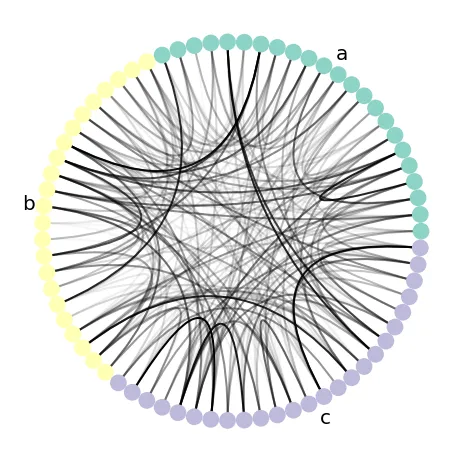
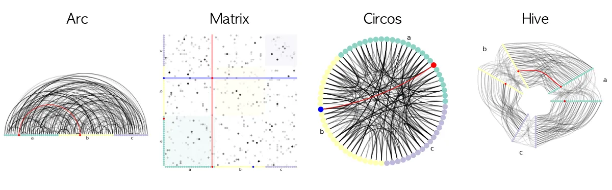

written by Eric J. Ma on 2021-08-16 | tags: open source network science graph theory nxviz network analysis graph network
In this post, I formally introduce the nxviz package,
a rational network visualization package with beautiful defaults made for Pythonistas.
I created it alongside many contributors, to whom I'm supremely thankful and indebted.
Come learn more about nxviz!
When working with network (graph) data,
being able to visualize it is immensely valuable.
When a graph visualization is done well,
it can help you provide immediate visual insights based on the structure of a graph.
While NetworkX provides a built-in graph visualization library,
other tools exist that accept a NetworkX graph object
and return a beautiful graph visualization.
I want to illustrate one example here, the nxviz project.
nxviz is a library that I originally built during my graduate school training days.
My goals were simple: to produce two kinds of beautiful and rational graph visualizations:
Circos plots and Hive plots,
both built by one of my graph visualization heroes,
Martin Krzywinski
of the BC Cancer Research Center in Vancouver, BC.
Back then, an easy API for making graph visualizations did not exist in the Python world.
So I decided to scratch my builder's itch and created that API.
Fast forward 5 years later, nxviz has become
a part-time research hobby into graph visualization
while also being a generally useful tool for Pythonistas who wish to visualize graphs.
The goals are simple:
to provide a declarative API for producing
beautiful and rational graph visualizations from NetworkX graph objects.
In this post, I would like to introduce you to the basic,
high-level plotting API so that you can get started with it easily.
nxviz?nxviz provides a family of plots:
Circos, Arc, Matrix, Hive, and Parallel plots.
They are unified by this idea that
rational plotting starts with prioritizing the placement of nodes.
Assuming you have a NetworkX graph called G
that you have been working with in-memory,
making a Circos plot that has colour annotations
for the nodes and edge transparencies is as simple as:
# We assume you have a graph G that is a NetworkX graph object. # In this example, all nodes possess the "group" and "value" node attributes # where "group" is categorical and "value" is continuous, # and all edges have the "edge_value" node attribute as well. import nxviz as nv ax = nv.circos( G, group_by="group", sort_by="value", node_color_by="group", edge_alpha_by="edge_value" ) nv.annotate.circos_group(G, group_by="group")

nxviz assumes that node attribute fields, i.e.
the keys in the Python dictionary that constitutes the node attribute dictionary,
are consistent across every node.
(There are special cases where we can break this assumption,
but we won't go into that here.)
The same is said for edge attribute data.
With that information,
we can declare that we would like nodes to be coloured by some attribute
and edges to have their transparency controlled by some other attribute.
Apart from Circos plots, other plots are available: Hive plots, Arc plots, and Matrix plots, as you can see below.

nxviz?When analyzing a graph, structure is what we primarily pursue. Thus, when visualizing a graph, we should highlight its structure. To additionally make the graph beautiful, one needs to impose additional constraints. As such, the rational approach to visualization is to prioritize the placement of nodes. Doing so helps us avoid the construction of messy hairballs, which, though illustrative of the complexity of networks, don't actually give us much in the way of visual insights.
nxviz works by first deciding where overall to place nodes.
This is known as the "graph layout" step of network visualization.
For example, in a Circos plot, we first constrain all nodes to be placed on the circumference of a circle.
Next, we need to decide how to place nodes relative to one another by leveraging node metadata attributes.
For example, if we plot the social network of students on the Circos plot
and want to visualize how height co-varies with connectivity,
we might order the students' nodes along the circumference from shortest to tallest.
If students were also assigned Houses, as in Harry Potter, we might group the students by their House.
Once that basic layout is done, we can add node styling, edge drawing,
and edge styling into the mix.
nxviz?Apart from making beautiful plots, nxviz does more!
For example, you can also annotate the plots using our annotation API
and highlight certain nodes using the highlighting API.
And because nxviz plots are built entirely on matplotlib axes,
you can drop down to the matplotlib API easily to make fine-tuned customizations of your own.
nxviz?Please head over to the official nxviz documentation page.
I'd love to hear how you use it
and where it can be improved -
and even better, if you'd like to work together to implement something,
then let's hash it out on the issue tracker!
Finally, I will be teaching a tutorial on Network Analysis on the ODSC AI+ platform - learn more about NetworkX, applied network science, and graph visualization up there! We will cover the basics of graph theory, how to use NetworkX, and how a variety of problems can be solved using graphs as a central data structure. You'll walk away with a solid grounding in NetworkX and applied network science; there will surely be seeds of inspiration for your downstream work!
@article{
ericmjl-2021-beautiful-graph-visualization-with-nxviz,
author = {Eric J. Ma},
title = {Beautiful Graph Visualization with `nxviz`},
year = {2021},
month = {08},
day = {16},
howpublished = {\url{https://ericmjl.github.io}},
journal = {Eric J. Ma's Blog},
url = {https://ericmjl.github.io/blog/2021/8/16/beautiful-graph-visualization-with-nxviz},
}
I send out a newsletter with tips and tools for data scientists. Come check it out at Substack.
If you would like to sponsor the coffee that goes into making my posts, please consider GitHub Sponsors!
Finally, I do free 30-minute GenAI strategy calls for teams that are looking to leverage GenAI for maximum impact. Consider booking a call on Calendly if you're interested!